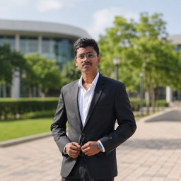
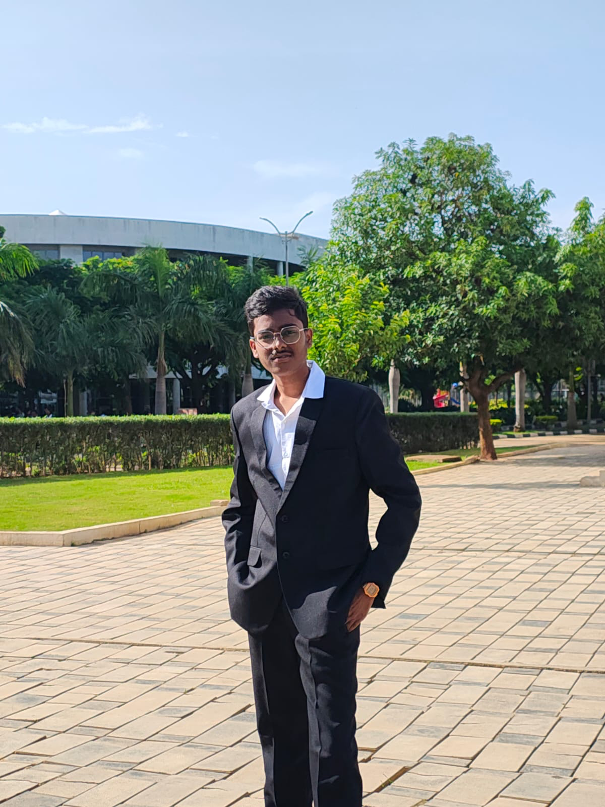
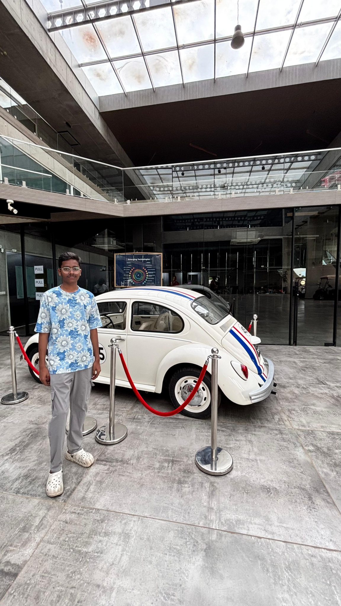
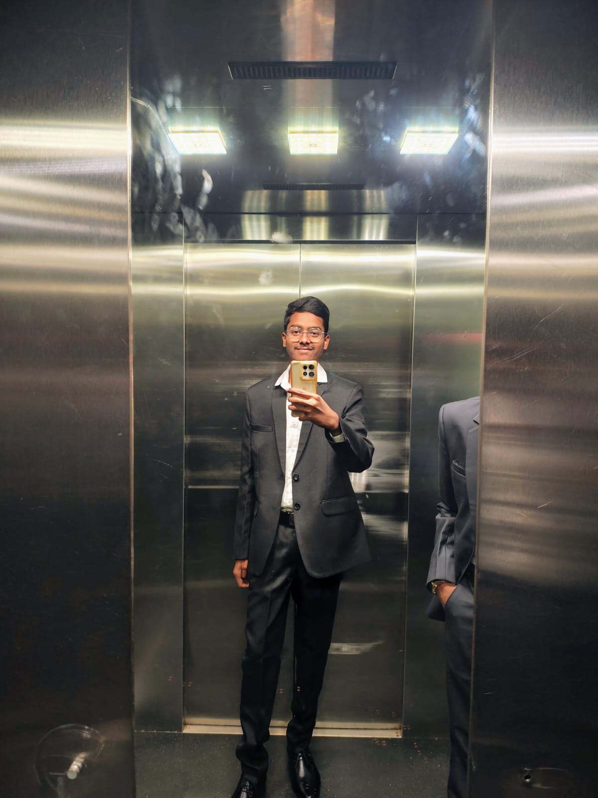

My Woxsen Beginning
A special memory from the beginning of my journey at Woxsen University. The campus, the first experiences and the feeling of starting a new chapter.
Building my journey through business, projects, ideas and continuous self-improvement. This is my digital space to document where I started, what I am building today, and where I want to go next.

A portfolio that grows with me as I learn, experiment, build and discover new opportunities.

I am Krishna Kishore, currently pursuing a BBA at Woxsen University. My academic journey began in Vijayawada, where I completed my 10th at Vivekananda English Medium High School and then studied MEC at Masterminds.
Now I am focused on upgrading myself through university projects, new courses, business ideas, technology, communication and real-world experiences. I want this website to become a living record of that growth.
Every stage adds something new. The timeline can be updated as the next chapter begins.
Completed my 10th standard in Vijayawada, building the foundation for the next stage of my education.
Studied MEC and continued developing my interest in business, commerce and practical thinking.
Currently pursuing BBA and actively working on projects, skills, university experiences and new ideas.
More projects, courses, achievements, internships, experiences and opportunities. This timeline will keep growing.
A visual collection of my memories and experiences from my journey at Woxsen University.
A special memory from the beginning of my journey at Woxsen University. The campus, the first experiences and the feeling of starting a new chapter.

Moments from university life that I want to keep as part of my personal journey, from everyday experiences to memorable days.

Photos and moments that represent how I am becoming more confident, professional and independent during my university journey.
These are areas I am actively learning and improving. They will evolve with experience.
The goal is not to have everything figured out. The goal is to keep moving forward.
I want to use my BBA journey as a foundation for deeper business knowledge, practical experience, entrepreneurship and continuous personal development.
This space is intentionally open. New achievements, certifications, internships, competitions and future goals can be added here as they happen.
Follow the journey across my social platforms.
Instagram, LinkedIn, Facebook and YouTube are connected directly. Follow my journey across all four platforms.